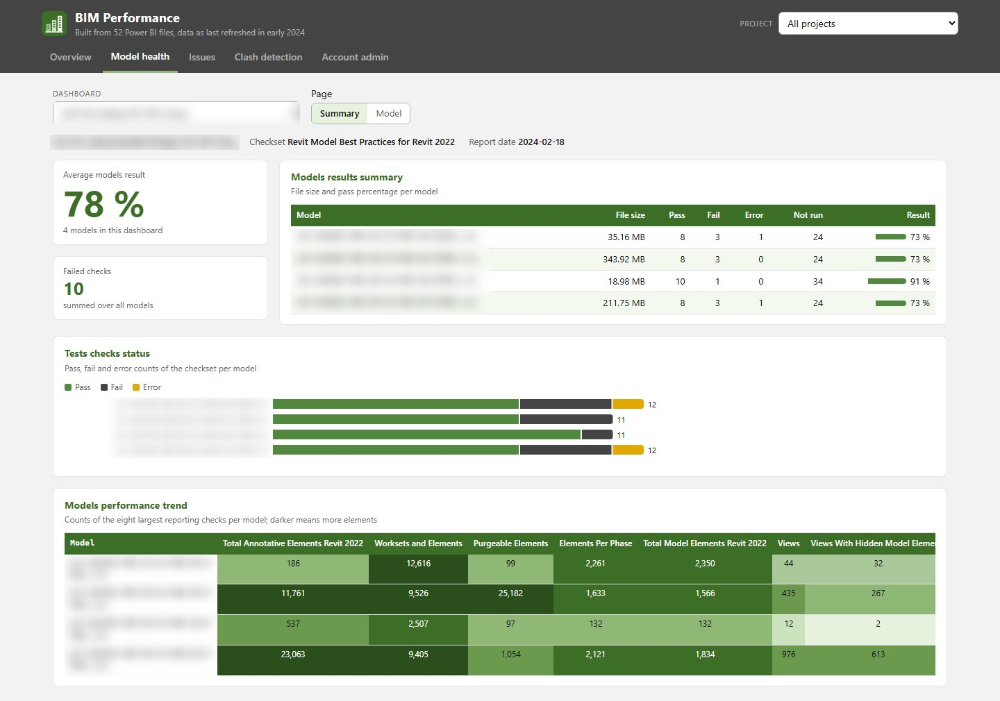
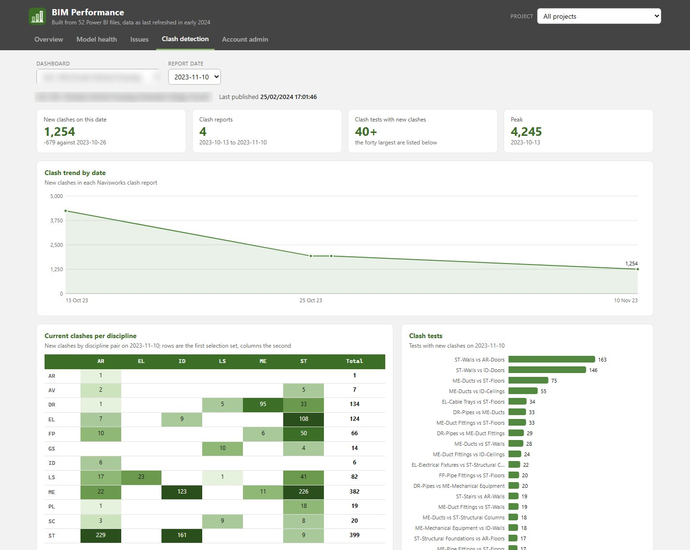

BIM Analytics
Making model health visible to people who never open Revit.
- Power BI
- DAX
- SharePoint
- BIM 360 / ACC
- Revizto
- Python
Project managers need to know whether the 3D models are in good shape, how many design conflicts are still open and who is working on what. That information sits inside model files and cloud platforms they rarely open. These dashboards pull it out automatically and show it in charts that update on their own.
The problem
Model health is invisible to the people who never open Revit, and they are most of the people making decisions about a project.
What it does
A set of automated Power BI dashboards and reporting pipelines for BIM coordination, covering model health, clash detection, open issues, ACC account administration, resourcing and team assessment.
Each dashboard reads directly from project data and refreshes on a schedule, so the coordination status is always current without anyone putting a report together. They are published as project information hubs on SharePoint.
In 2026 I decoded one programme's 52 Power BI files (model health across 376 Revit models, clash trends, issues and account administration) and rebuilt them as one self-contained HTML page that opens offline in any browser, without Power BI, and leaves out every personal detail.
Features
- Model health dashboards from Autodesk Model Checker results across every project
- Clash detection dashboards: the trend per report date, a matrix of discipline pairs, and the clash tests
- Issue dashboards from BIM 360 and ACC: causes, companies, status and timelines
- ACC account administration: user load, products, companies, project sizes and model opening times
- Resourcing and team assessment dashboards
- Project information hubs on SharePoint with scheduled refresh
- Offline rebuild: 52 Power BI files decoded into one self-contained HTML page with a project picker on every tab, no Power BI needed, and no personal data
Terms on this page
- BIM
- Building Information Modelling: designing a building as a shared 3D model that also holds data about every part, instead of separate drawings.
- Revit
- Autodesk's main software for designing buildings as BIM models. Most architects and engineers use it.
- Clash
- A place where two parts of a building model collide, for example a pipe running through a beam.
- ACC / BIM 360
- Autodesk Construction Cloud, an online platform where project teams store and share models and documents. BIM 360 is the older version.
- Autodesk Model Checker
- A free Autodesk tool that checks Revit models against a list of rules and writes a report.
- Power BI
- Microsoft's software for interactive charts and dashboards.
See it
Screenshots & demos


